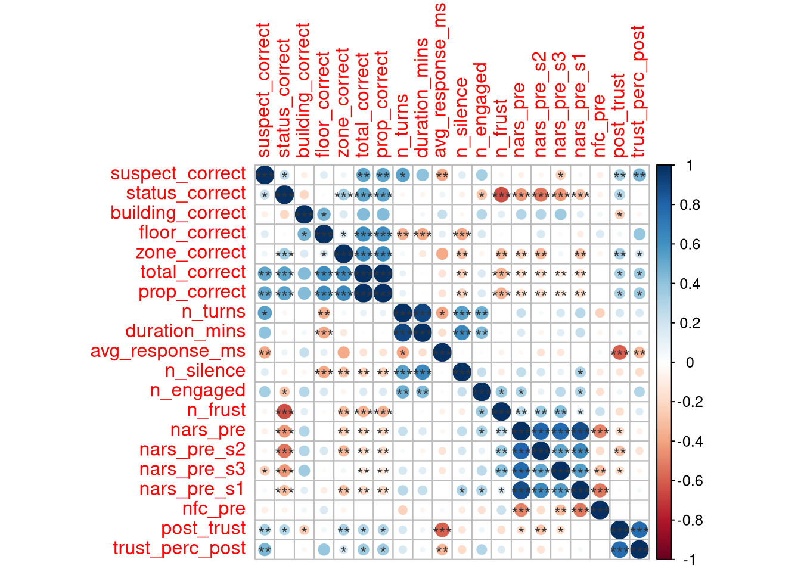
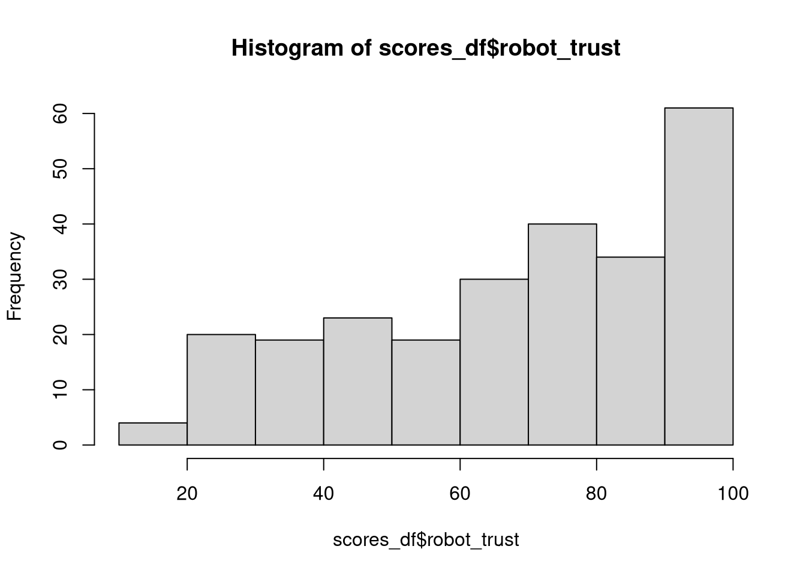
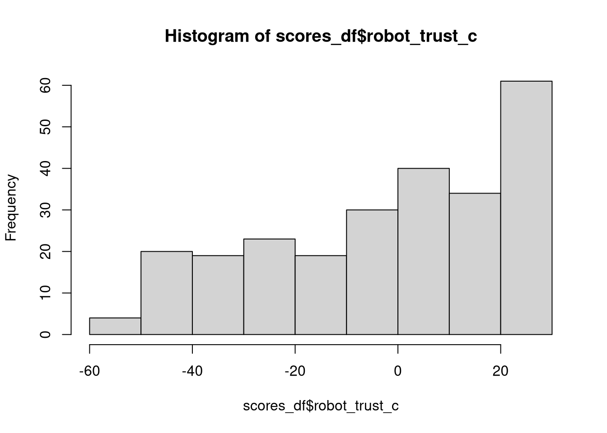
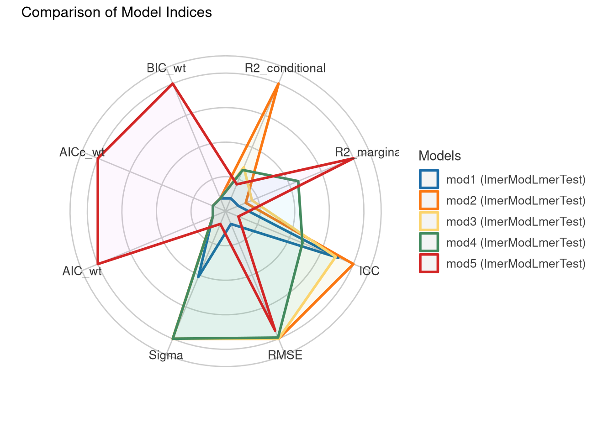
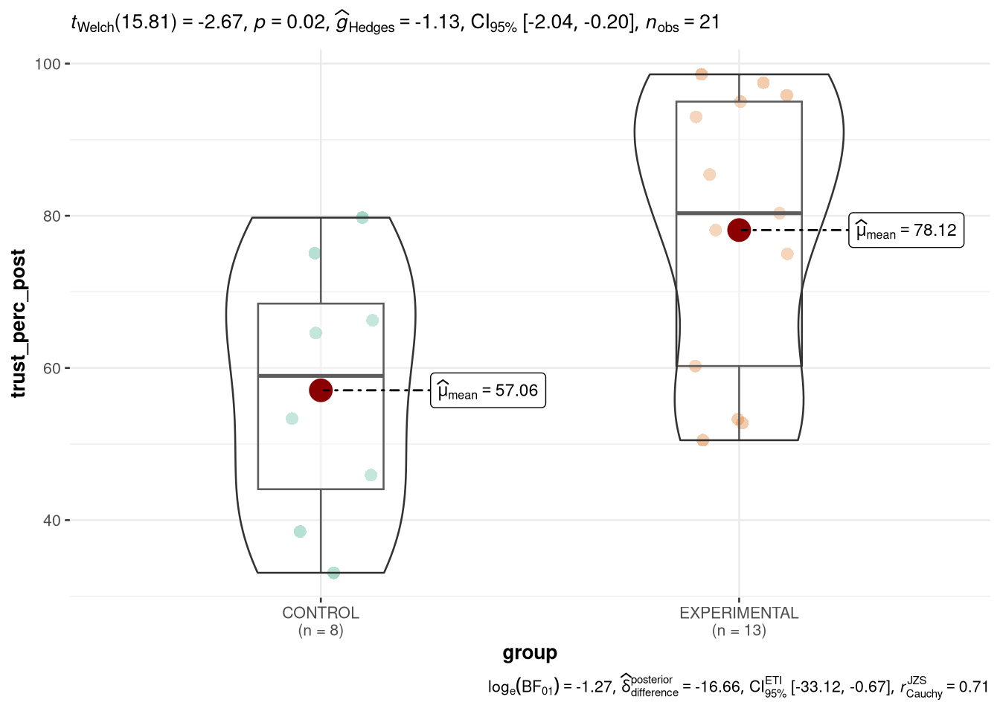
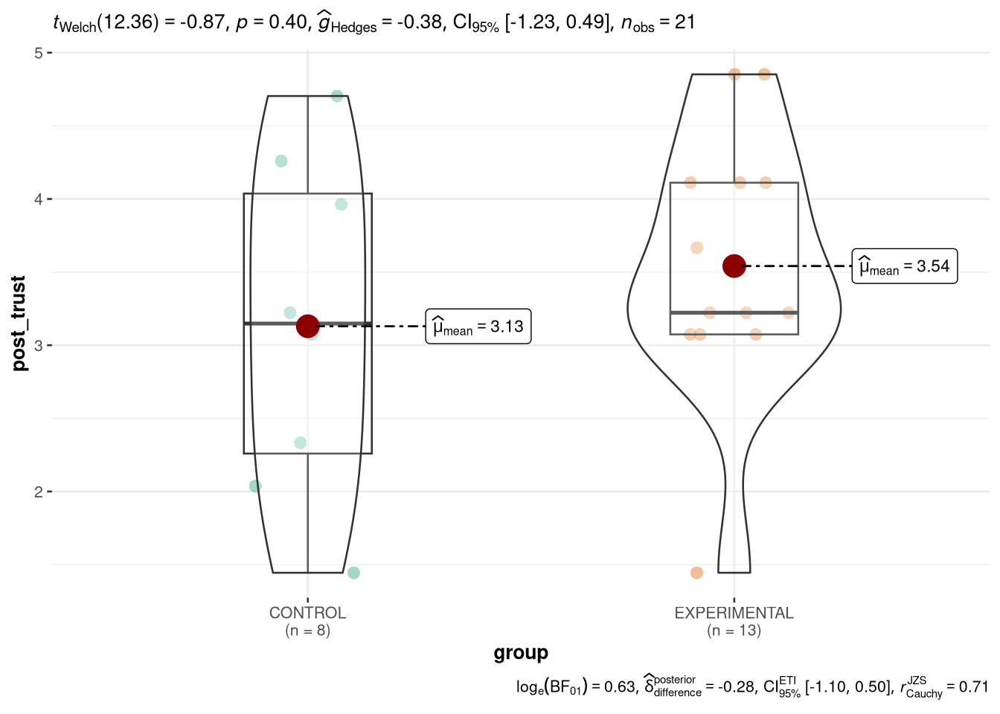

| Characteristic | N | CONTROL N = 81 |
EXPERIMENTAL N = 131 |
p-value2 |
|---|---|---|---|---|
| Gender | 19 | >0.9 | ||
| Woman | 3 / 7 (42.9%) | 5 / 12 (41.7%) | ||
| Man | 4 / 7 (57.1%) | 7 / 12 (58.3%) | ||
| Missing | 1 | 1 | ||
| Age Group | 19 | 0.5 | ||
| 18-24 | 2 / 7 (28.6%) | 7 / 12 (58.3%) | ||
| 25-34 | 3 / 7 (42.9%) | 3 / 12 (25.0%) | ||
| 34-44 | 2 / 7 (28.6%) | 2 / 12 (16.7%) | ||
| Missing | 1 | 1 | ||
| Program | 19 | 0.2 | ||
| Psychology | 0 / 7 (0.0%) | 2 / 12 (16.7%) | ||
| Engineering | 1 / 7 (14.3%) | 0 / 12 (0.0%) | ||
| Computer Science | 6 / 7 (85.7%) | 7 / 12 (58.3%) | ||
| Other | 0 / 7 (0.0%) | 3 / 12 (25.0%) | ||
| Missing | 1 | 1 | ||
| Experience w/Robots | 19 | 3 / 7 (42.9%) | 4 / 12 (33.3%) | >0.9 |
| Missing | 1 | 1 | ||
| Native English Speaker | 21 | 0.3 | ||
| FALSE | 7 / 8 (87.5%) | 8 / 13 (61.5%) | ||
| TRUE | 1 / 8 (12.5%) | 5 / 13 (38.5%) | ||
| NARS | 21 | 43 (7) | 40 (10) | 0.4 |
| nars_pre_s2 | 21 | 16.88 (3.38) | 14.90 (3.62) | 0.3 |
| nars_pre_s3 | 21 | 10.5 (2.7) | 9.4 (3.5) | 0.6 |
| nars_pre_s1 | 21 | 15.9 (4.5) | 16.4 (5.8) | 0.7 |
| Need for Cognition | 21 | 3.21 (0.78) | 3.35 (1.06) | >0.9 |
| 1 n / N (%); Mean (SD) | ||||
| 2 Fisher’s exact test; Wilcoxon rank sum test | ||||
Responsive Robots



Data: scores_df
Models:
mod1: robot_trust ~ group + nars_pre + nfc_pre + (1 | session_id) + (1 | trust_items)
mod3: robot_trust ~ group * trust_items + nars_pre + nfc_pre + (1 | session_id)
mod2: robot_trust ~ group * trust_items + nars_pre + nfc_pre + (1 | session_id) + (1 | trust_items)
npar AIC BIC logLik -2*log(L) Chisq Df Pr(>Chisq)
mod1 7 2104.7 2129.3 -1045.3 2090.7
mod3 28 2113.6 2212.2 -1028.8 2057.6 33.14 21 0.04469 *
mod2 29 2115.6 2217.7 -1028.8 2057.6 0.00 1 1.00000
---
Signif. codes: 0 '***' 0.001 '**' 0.01 '*' 0.05 '.' 0.1 ' ' 1Data: scores_df
Models:
mod1: robot_trust ~ group + nars_pre + nfc_pre + (1 | session_id) + (1 | trust_items)
mod2: robot_trust ~ group * trust_items + nars_pre + nfc_pre + (1 | session_id) + (1 | trust_items)
npar AIC BIC logLik -2*log(L) Chisq Df Pr(>Chisq)
mod1 7 2104.7 2129.3 -1045.3 2090.7
mod2 29 2115.6 2217.7 -1028.8 2057.6 33.14 22 0.05994 .
---
Signif. codes: 0 '***' 0.001 '**' 0.01 '*' 0.05 '.' 0.1 ' ' 1| Characteristic | Beta (SE)1 |
|---|---|
| group | |
| CONTROL | — |
| EXPERIMENTAL | 32** (10.4) |
| trust_items | |
| what_percent_of_the_time_did_this_robot_act_consistently | — |
| what_percent_of_the_time_did_this_robot_answer_the_questions_asked | 2.5 (13.0) |
| what_percent_of_the_time_did_this_robot_communicate_appropriately | 13 (13.0) |
| what_percent_of_the_time_did_this_robot_follow_directions | 8.0 (13.0) |
| what_percent_of_the_time_did_this_robot_meet_the_needs_of_the_mission_task | 2.8 (13.0) |
| what_percent_of_the_time_did_this_robot_provide_appropriate_information | 5.3 (13.0) |
| what_percent_of_the_time_did_this_robot_provide_feedback | 5.8 (13.0) |
| what_percent_of_the_time_was_the_robot_dependable | -5.5 (13.0) |
| what_percent_of_the_time_was_the_robot_reliable | 5.3 (13.0) |
| what_percent_of_the_time_was_the_robot_responsive | 9.8 (13.0) |
| what_percent_of_the_time_was_the_robot_supportive | 9.9 (13.0) |
| what_percent_of_the_time_was_the_robot_trustworthy | 10 (13.0) |
| nars_pre | -0.06 (0.555) |
| nfc_pre | -1.1 (5.16) |
| group * trust_items | |
| EXPERIMENTAL * what_percent_of_the_time_did_this_robot_answer_the_questions_asked | -5.8 (8.81) |
| EXPERIMENTAL * what_percent_of_the_time_did_this_robot_communicate_appropriately | -15 (8.73) |
| EXPERIMENTAL * what_percent_of_the_time_did_this_robot_follow_directions | -9.8 (8.81) |
| EXPERIMENTAL * what_percent_of_the_time_did_this_robot_meet_the_needs_of_the_mission_task | -7.3 (8.73) |
| EXPERIMENTAL * what_percent_of_the_time_did_this_robot_provide_appropriate_information | -9.7 (8.73) |
| EXPERIMENTAL * what_percent_of_the_time_did_this_robot_provide_feedback | -3.3 (8.73) |
| EXPERIMENTAL * what_percent_of_the_time_was_the_robot_dependable | -9.4 (8.73) |
| EXPERIMENTAL * what_percent_of_the_time_was_the_robot_reliable | -20* (8.73) |
| EXPERIMENTAL * what_percent_of_the_time_was_the_robot_responsive | -21* (8.73) |
| EXPERIMENTAL * what_percent_of_the_time_was_the_robot_supportive | -12 (8.73) |
| EXPERIMENTAL * what_percent_of_the_time_was_the_robot_trustworthy | -19* (8.73) |
| 1 p<0.05; p<0.01; p<0.001 | |
| Abbreviation: SE = Standard Error | |
| Characteristic | Beta (SE)1 |
|---|---|
| group | |
| CONTROL | — |
| EXPERIMENTAL | 16 (9.18) |
| trust_items | |
| what_percent_of_the_time_did_this_robot_act_consistently | — |
| what_percent_of_the_time_did_this_robot_answer_the_questions_asked | -2.0 (7.39) |
| what_percent_of_the_time_did_this_robot_communicate_appropriately | 10 (7.39) |
| what_percent_of_the_time_did_this_robot_follow_directions | 3.1 (7.39) |
| what_percent_of_the_time_did_this_robot_meet_the_needs_of_the_mission_task | -2.9 (7.39) |
| what_percent_of_the_time_did_this_robot_provide_appropriate_information | 1.4 (7.39) |
| what_percent_of_the_time_did_this_robot_provide_feedback | 6.3 (7.39) |
| what_percent_of_the_time_was_the_robot_dependable | -11 (7.39) |
| what_percent_of_the_time_was_the_robot_reliable | -0.14 (7.39) |
| what_percent_of_the_time_was_the_robot_responsive | 8.1 (7.39) |
| what_percent_of_the_time_was_the_robot_supportive | 8.1 (7.39) |
| what_percent_of_the_time_was_the_robot_trustworthy | 8.7 (7.39) |
| Do you have any experience with robots? | |
| Yes | — |
| No | 25** (7.20) |
| native_english | |
| FALSE | — |
| TRUE | 28** (6.91) |
| nars_pre | -0.57 (0.397) |
| nfc_pre | 0.72 (3.68) |
| group * trust_items | |
| EXPERIMENTAL * what_percent_of_the_time_did_this_robot_answer_the_questions_asked | -1.7 (9.30) |
| EXPERIMENTAL * what_percent_of_the_time_did_this_robot_communicate_appropriately | -11 (9.30) |
| EXPERIMENTAL * what_percent_of_the_time_did_this_robot_follow_directions | -5.3 (9.30) |
| EXPERIMENTAL * what_percent_of_the_time_did_this_robot_meet_the_needs_of_the_mission_task | -2.0 (9.30) |
| EXPERIMENTAL * what_percent_of_the_time_did_this_robot_provide_appropriate_information | -6.3 (9.30) |
| EXPERIMENTAL * what_percent_of_the_time_did_this_robot_provide_feedback | -5.3 (9.30) |
| EXPERIMENTAL * what_percent_of_the_time_was_the_robot_dependable | -4.5 (9.30) |
| EXPERIMENTAL * what_percent_of_the_time_was_the_robot_reliable | -16 (9.30) |
| EXPERIMENTAL * what_percent_of_the_time_was_the_robot_responsive | -19* (9.30) |
| EXPERIMENTAL * what_percent_of_the_time_was_the_robot_supportive | -11 (9.30) |
| EXPERIMENTAL * what_percent_of_the_time_was_the_robot_trustworthy | -18 (9.30) |
| 1 p<0.05; p<0.01; p<0.001 | |
| Abbreviation: SE = Standard Error | |

Data: scores_df2
Models:
mod1: robot_trust ~ group + nars_pre + nfc_pre + (1 | session_id) + (1 | trust_items)
mod2: robot_trust ~ group * trust_items + nars_pre + nfc_pre + (1 | session_id) + (1 | trust_items)
mod4: robot_trust ~ group * trust_items + native_english + nars_pre + nfc_pre + (1 | session_id)
mod3: robot_trust ~ group * trust_items + nars_pre + nars_pre_s1 + nars_pre_s2 + nars_pre_s3 + (1 | session_id)
npar AIC BIC logLik -2*log(L) Chisq Df Pr(>Chisq)
mod1 7 657.11 679.81 -321.56 643.11
mod2 23 659.82 734.38 -306.91 613.82 29.2899 16 0.02205 *
mod4 23 658.33 732.89 -306.17 612.33 1.4915 0
mod3 24 657.41 735.21 -304.70 609.41 2.9230 1 0.08732 .
---
Signif. codes: 0 '***' 0.001 '**' 0.01 '*' 0.05 '.' 0.1 ' ' 1
